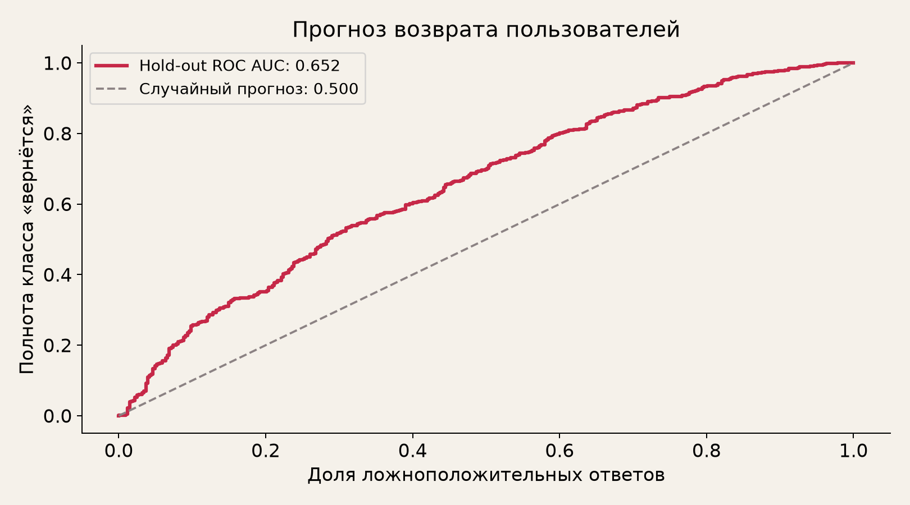
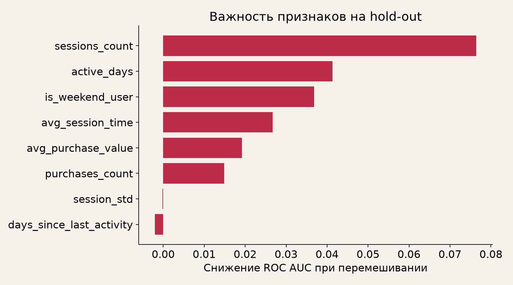

Разбор проекта · 21 ноября 2026
Кто вернётся в приложение
Воспроизводимый учебный ML-кейс: отдельный hold-out, кросс-валидация и разбор ошибок.
01 / Метод
Обработка данных внутри обучения
Стратифицированное разделение 80/20, random_state = 42. Пять фолдов на обучающей части. Импутация и масштабирование выполняются внутри Pipeline каждого фолда. ID исключён из признаков.
| Модель | CV ROC AUC | Разброс по фолдам |
|---|
Модель выбрана по среднему CV ROC AUC. Отложенная часть не участвовала в выборе. Это повторная проверка двух моделей из проекта, а не повторение всех старых ансамблей.
Качество на hold-out

Цена порога
Какие признаки использует модель

Что можно заключить
ROC AUC около 0,652 выше случайного прогноза, но качество пока недостаточно для уверенного автоматического выбора получателей воздействия. При пороге 0,5 модель пропускает часть отрицательного класса и часто предсказывает возврат.
Следующий шаг — уточнить окно возврата, время доступности признаков и стоимость ошибок. Без этого нельзя оценить пользу кампании удержания или причинный эффект уведомлений.
Основание
Локальные файлы AiChallenge: условие, обучающая таблица и исходные решения. Проверены уникальность ID, целевой класс и числовые признаки. Тест соревнования и место на лидерборде не оценивались. Модель, записи пользователей и исходники остаются локально.